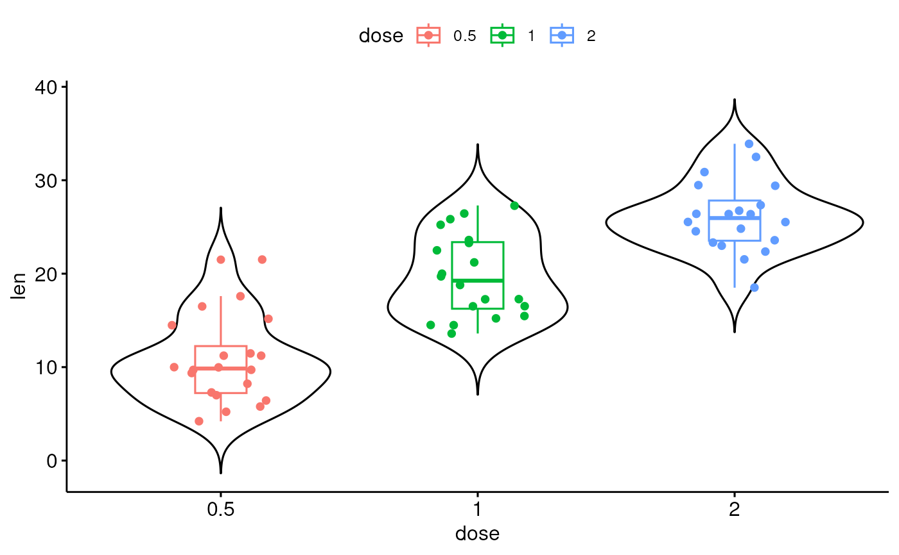

Add Summary Statistics or a Geom onto a ggplot
Add summary statistics or a geometry onto a ggplot.
ggadd(p, add = NULL, color = "black", fill = "white", group = 1, width = 1, shape = 19, size = NULL, alpha = 1, jitter = 0.2, binwidth = NULL, dotsize = size, error.plot = "pointrange", ci = 0.95, data = NULL, position = position_dodge(0.8), p_geom = "")
Arguments
- p
- a ggplot
- add
- character vector specifying other plot elements to be added. Allowed values are one or the combination of: "none", "dotplot", "jitter", "boxplot", "point", "mean", "mean_se", "mean_sd", "mean_ci", "mean_range", "median", "median_iqr", "median_mad", "median_range".
- color
- point or outline color.
- fill
- fill color. Used only when
error.plot = "crossbar". - group
- grouping variable. Allowed values are 1 (for one group) or a character vector specifying the name of the grouping variable. Used only for adding statistical summary per group.
- width
- numeric value between 0 and 1 specifying bar or box width.
Example width = 0.8. Used only when
error.plotis one of c("crossbar", "errorbar"). - shape
- point shape. Allowed values can be displayed using the function
show_point_shapes(). - size
- numeric value in [0-1] specifying point and line size.
- alpha
- numeric value specifying fill color transparency. Value should be in [0, 1], where 0 is full transparency and 1 is no transparency.
- jitter
- a numeric value specifying the amount of jittering. Used only
when
addcontains "jitter". - binwidth
- numeric value specifying bin width. use value between 0 and 1
when you have a strong dense dotplot. For example binwidth = 0.2. Used only
when
addcontains "dotplot". - dotsize
- as
sizebut applied only to dotplot. - error.plot
- plot type used to visualize error. Allowed values are one of
c("pointrange", "linerange", "crossbar", "errorbar", "upper_errorbar", "lower_errorbar", "upper_pointrange", "lower_pointrange", "upper_linerange", "lower_linerange"). Default value is "pointrange". - ci
- the percent range of the confidence interval (default is 0.95).
- data
- a
data.frameto be displayed. IfNULL, the default, the data is inherited from the plot data as specified in the call to ggplot. - position
- position adjustment, either as a string, or the result of a call to a position adjustment function. Used to adjust position for multiple groups.
- p_geom
- the geometry of the main plot. Ex: p_geom = "geom_line". If NULL, the geometry is extracted from p. Used only by ggline().
Examples
# Basic violin plot data("ToothGrowth") p <- ggviolin(ToothGrowth, x = "dose", y = "len", add = "none") # Add mean +/- SD and jitter points p %>% ggadd(c("mean_sd", "jitter"), color = "dose")# Add box plot p %>% ggadd(c("boxplot", "jitter"), color = "dose")